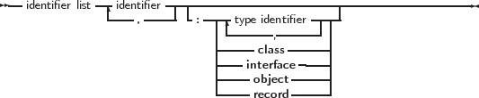
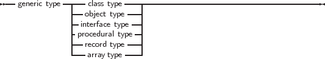

A generic type definition is much like a type definition, with the exception that it contains a list of
placeholders for types, as can be seen in the following syntax diagram:
_________________________________________________________________________________________________________
Generic class types


___________________________________________________________________
For classes, objects, procedural types and extended records, the generic type declaration should be
followed by a type implementation. It is the same as a normal class implementation with a single
exception, namely that any identifier with the same name as one of the template identifiers must
be a type identifier.
So, the generic type declaration is much like a normal type declaration, except that there is an as
yet unknown type present. The unknown types are listed in the placeholder list, and they are
unknown until the class is specialized.
The following is a valid generic class definition:
Type
generic TList<_T>=class(TObject)
Public
type
TCompareFunc = function(const Item1, Item2: _T): Integer;
var
data : _T;
procedure Add(item: _T);
procedure Sort(compare: TCompareFunc);
end;
This class could be followed by an implementation as follows:
procedure TList.Add(item: _T);
begin
data:=item;
end;
procedure TList.Sort(compare: TCompareFunc);
begin
if compare(data, 20) <= 0 then
halt(1);
end;
There are some noteworthy things about this declaration and implementation:
- There is a single placeholder _T. It will be substituted by a type identifier when the generic
class is specialized. The identifier _T may not be used for anything else than a type
placeholder. This means that the following would be invalid:
procedure TList.Sort(compare: TCompareFunc);
Var
_t : integer;
begin
// do something.
end;
- The local type block contains a single type TCompareFunc. Note that the actual type is not
yet known inside the generic class definition: the definition contains a reference to the
placeholder _T. All other identifier references must be known when the generic class is
defined, not when the generic class is specialized.
- The local variable block is equivalent to the following:
generic TList<_T>=class(TObject)
Public
type
TCompareFunc = function(const Item1, Item2: _T): Integer;
Public
data : _T;
procedure Add(item: _T);
procedure Sort(compare: TCompareFunc);
end;
Not only generic classes can be defined, but also other types:
{$mode objfpc}
{$INTERFACES CORBA}
type
generic PlanarCoordinate<t> = record
x,y : t;
end;
TScreenCoordinate = specialize PLanarCoordinate<word>;
TDiscreteCoordinate = specialize PlanarCoordinate<integer>;
TRealCoordinate = specialize PlanarCoordinate<extended>;
generic TDistanceFunction<t> = function (x,y : t) : Extended of object;
TScreenDistance = specialize TDistanceFunction<word>;
TDiscreteDistance = specialize TDistanceFunction<integer>;
TRealDistance = specialize TDistanceFunction<Extended>;
generic TArray<t> = array of t;
TMyIntegerArray = specialize TArray<integer>;
generic IList<_T> = Interface
Function GetItem(AIndex : Integer) : _T;
Procedure SetItem(AIndex : Integer; AValue : _T);
Function GetCount : Integer;
Property Items [AIndex : Integer] : _T Read GetItem Write SetItem;
Property Count : Integer Read GetCount;
end;
generic TList<_T>=class(TObject, specialize IList<_T>)
public type
TCompareFunc = function(const Item1, Item2: _T): Integer;
Function GetItem(AIndex : Integer) : _T;
Procedure SetItem(AIndex : Integer; AValue : _T);
Function GetCount : Integer;
Public
data : _T;
procedure Add(item: _T);
procedure Sort(compare: TCompareFunc);
end;
generic TPointSet<t> = array of specialize PlanarCoordinate<t>;
TScreenPointSet = specialize TPointSet<word>;
TDiscretePointSet = specialize TPointSet<integer>;
TRealPointSet = specialize TPointSet<extended>;
Remark: A word on visibility: the template types T or _T are available as strict private types. That means
that the types are not available in the descendent classes, unless they are made available through
some protected or private mechanism, as in the following example:
generic TList<_T>=class(TObject)
public type
TItemType = _T;
end;